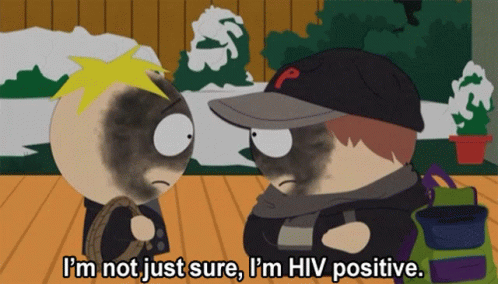
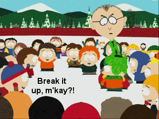

 
 S12 E1
S12 E1
Tonsil Trouble
S12 E1Tonsil Trouble
Tonsil TroubleWhen it comes to a classic Cartman versus Kyle episode, Tonsil Trouble is one of the episodes that usualy comes to mind. This episode is absolutely hilarious and dark at the same time with its main plot. Because of a failed blood transfusion during his tonsil removal, Cartman gets HIV, and after being ridiculed by Kyle, decides to give him the virus as well. Now, the two of them are responsible for finding a cure to HIV with a little help from a well known celebrity.
This episode is funny as hell, and there were countless times I busted a gut laughing. Cartman is playing his A game in this episode and it really shows, especially when the show deals with a very dark subject (especially if it was released in the 90s). One of my favorite running gags is the many appearances of Jimmy Buffet. When Cartman tries to get a special ceramony set up for awareness of his newly contracted disease, there is none other than Jimmy Buffet for a musician. I honestly find it a tad bit relatable since I like to go thrift shopping and Jimmy Buffet's CDs are the most common things to find in the media section. It sucks when you try to find hidden gems for dirt cheap.
Notably enough, this is one of the episodes that made me grow to love Kyle as a character. Cartman's antics are memorable and classic, but Kyle has been my favorite because he is reasonable and smart, usually being the voice of reason for Cartman's bullshit. Seeing him destroy all Cartman's stuff in a fit of rage was so satisfying, mainly because the antagonist finally gets his comeuppance after a long time. Mind you, I enjoy a good villain, but that sdoesn't mean moments like these are not satisfying. The interactions between Cartman and Kyle in this episode are moments that I enjoy in the series because they are such polar opposites. The only thing I'm off the fence about is the amount of fuel it gives to shippers on DeviantArt and such mainly because of the moments like when the flight attendant potentially mistakes Cartman and Kyle as a couple. This is the shit that fuels the 13 year olds; and I'm not a fan of that part of the fandom. That's the only thing I don't like.
The special appearance of Magic Johnson makes the episode even better, especially considering his history with HIV and the theories that spawned with it. The cure to HIV is supposably a ton of money, which symbolizes that the cure to HIV, and a lot of other 'uncurable' diseases is enough money to pay for it. I love how it literally turns into a remedy that cures everyone, it just fits so well with the story and the symbolization of money.
Finally, my absolute favorite part of this episode is Kyle's annoyance with Cartman's HIV jokes. The 'HIV positive' joke was funny and creative to begin with, and Kyle getting more and more furious as time goes on, stating that 'death isn't funny so shut the fuck up' just takes the cake for me. He is geniuenly angry, and it doesn't involve breaking his character like they did with Butters in Going Native. It fits with Kyle's character because he is the voice of reason of the four boys most of the time, even Stan gets distracted in his own doubts. His attitude is understandable for someone who now has to live with a disease, but at the same time, some could say it was warranted. After all, he did respond very inappropriately when word got around, but Cartman did deserve it in a way. Tell me with a straight face that Cartman didn't deserve to be laughed at after committing crimes like murder by proxy and pirating.
To put it simply, this is a great episode, and it is one of my favorite first episodes in a season, close to Good Times with Weapons and The Return of Chef. It has every right being in the Cult of Cartman DvD set and is a must-watch for Cartman fans